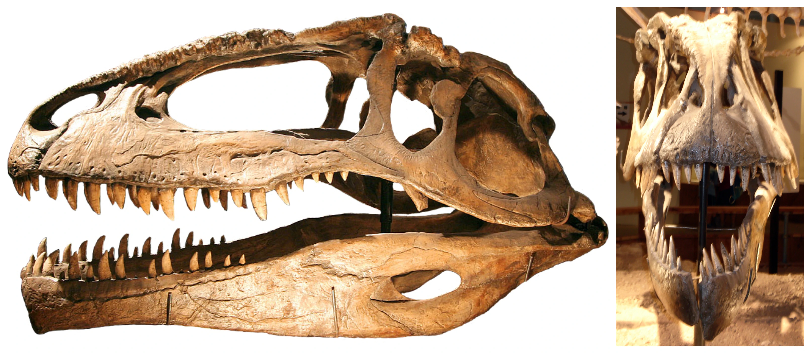

Giganotosaurus
- Largo: 12 a 13 metros
- Alto: 3 a 4 metros
- Peso: 4.2 a 8.5 toneladas
- Posible hábitat: Llanuras y bosques húmedos
Giganotosaurus carolinii fue una especie de dinosaurio terópodo carcarodontosáurido que vivió hace 99.6 a 95 millones de años atrás, a finales del Período Cretácico, en lo que hoy es Argentina. Es uno de los miembros más grandes y representativos de su familia, además de ser uno de los dinosaurios carnívoros más largos de los que se tiene conocimiento.
Su nombre se compone de las palabras en griego antiguo gigas (que hace referencia a algo de gran tamaño), notos (que se traduce como "del sur" o "austral") y del sufijo -sauros, que puede interpretarse como "lagarto" o "reptil". Por otro lado, su epíteto de especie rinde honor a Rubén Carolini, el paleontólogo aficionado que descubrió los restos de este animal en 1993.
Características
Giganotosaurus habría tenido un cráneo ligeramente alargado, compuesto de tal forma que sus ojos quedaban apuntando hacia adelante, lo que le habría brindado una visión binocular que apoyaría su condición como depredador. Se estima que el cráneo de este animal habría medido alrededor de 1.63 metros desde la conexión al cuello hasta la punta del hocico.
La mandíbula inferior de Giganotosaurus tenía una forma ligeramente cóncava hacia afuera, lo que hacia que la parte externa de su dentario fuera prominente y similar a una pequeña barbilla. Los dientes que albergaban estas mandíbulas eran aserrados y ligeramente curvos. Mientras los dientes de Tyrannosaurus estaban adaptados para demoler todo a su paso, los de Giganotosaurus estaban hechos para desgarrar la carne de sus presas y hacer que estas se desangrasen, lo que habría sido especialmente útil al momento de cazar grandes saurópodos.
Restos de Giganotosaurus demuestran que era un depredador activo, ya que por su cuerpo es poderoso pero ligero. Su cola larga y musculosa, le daba equilibrio a su cuerpo al desplazarse a altas velocidades, a pesar de su gran tamaño llegaba hasta los 50 km/h. Para culminar con las mortales armas que contaba para obtener su alimento poseía brazos grandes, aunque pequeños en relación a su cuerpo, con tres dedos cada uno terminados en afiladas garras que le ayudaban a sostener a sus presas mientras las mataba con sus mandíbulas.
Historia
Fue descubierto en 1993, no hace mucho tiempo, por Rubén Carolini, quién no fue un paleontólogo experto sino un mecánico con suerte, encontró los huesos de este dinosaurio casi por accidente. Sus huesos estaban enterrados superficialmente en el desierto casi a la vista, no se necesitó excavar mucho para encontrarlos. Fue encontrado en Sudamérica, para ser más exactos en la Patagonia en una zona que pertenece a la Formación Candeleros y que se cree se formo hace aproximadamente 95 millones de años durante el Cretácico superior. Se encontró un espécimen muy completo, casi el 70% de sus huesos fueron encontrados, incluyendo un gran cráneo y gran parte de su columna vertebral. Por estos hallazgos se cree que Gigantosaurus medía 12 metros de largo y se cree que podía llegar a pesar hasta 7 toneladas. Lo mejor de este espécimen es que se encontró en muy buenas condiciones y por esto se ha podido estudiar a detalle y profundizar en sus costumbres y anatomía.
Paleoecología
Giganotosaurus habitaba en la patagonia mezosoica donde gran variedad de coníferas abundaban. Convivió con saurópodos.
En el Cretácico, el lugar donde fueron encontrados los restos de Giganotosaurus estaba surcado de arroyos y ríos caudalosos, rodeados por bosques de coníferas en galería con araucarias y palmeras. La mayoría de los cursos de agua desembocaba en el Océano Pacífico, dado que la Cordillera de los Andes no existía. Vivía en la Patagonia, que entonces era un bosque de coníferas con claros, dónde aparecieron las primeras hierbas. Ese lugar tampoco era como ahora respecto al clima, como Sudamérica aún estaba unida a la Antártida, el clima era más cálido en toda la región, y la corriente circumpolar aún no existía y las grandes tormentas y lluvias se quedaban en el océano, los andes bloqueaban las precipitaciones, formando un gran arco insular que rodeaba la costa, y las corrientes cálidas del atlántico traían la lluvia necesaria, y debido a ese clima benigno los dinosaurios alcanzaron un gran tamaño, y desarrolló una diversa cadena alimentaria, los saurópodos también se desarrollaron aquí, y eso hizo que Giganotosaurus creciera y empezara a cazar. Normalmente era solitario un cazador solitario.
Extincion
Hace 95 millones años, el aumento del nivel del mar empezó a separar Sudamérica de la Antártida, formando el primer tramo de la corriente circumpolar,alterando el clima y reduciendo la vegetación, eso también redujo el número de saurópodos y también el de los Giganotosaurus, algunos morían de hambre, y otros tenían que apañárselas en solitario ,que con el tiempo morían.